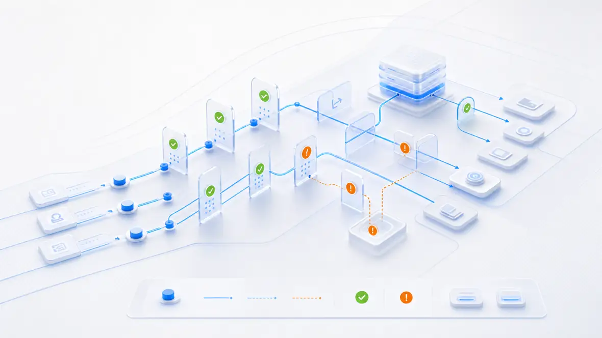

For bank receivables teams, recovery that respects the relationship
Route every account to the right next action.
TSI places each receivable on a governed path: intake, validation, compliant outreach, resolution. Bank teams see where every account sits and why, before it moves.
Request a review
Built for ARM portfolios under bank examination and audit standards.

Account routing rail
Account REF-4821 (illustrative) · portfolio batch 09
Intake
Validate
Outreach
Resolution
Hold gate: dispute flag pauses outreach automatically
Gate armed